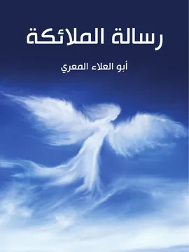

رسالة الملائكة

قراءة عربية أصلية محددة النطاق في الصفحات 5، 6 من ملف PDF المرتبط، وليست تلخيصا كاملا للكتاب. نناقش ما تدعمه هذه المقاطع فقط.
فوائد من قفر
تفتتح الرسالة بخطاب مولاه: ليس مولاي الشيخ، أدام الله عزه، بأول رائد ظن في الأرض العازبة فوجدها من النبات قفرًا، ولا آخر شائم ظن الخير بالسحابة فكانت من الصخر مخرًا؛ جاءتني منه فوائد كأنها الحسن بنات صخر، متملثًا ببيت لعمري: لقد نبهت من كان نائمًا وأسمعت من كانت له أذن. ويستعيد صاحب المعرة أيامه: وكنت في عنفوان الشبيبة أود أنني من أهل العلم فسجنتني عنه سواجن، غادرتني مثل صحيفتي خطأ في النحو في خلد آمنًا من المحو. ثم يدخل في بابه: إذا صدق فجر اللمة فلا عذر لصاحبها، وصدق الشعر في المفرق يوجب صدق الإنسان الفرق، ومن ملعذ بالعطش بالعذب؟ فهي رسالة في دقائق اللغة والاشتقاق والمسائل النحوية، منها ما سُمي فيها الملائكة على غير ظن القارئ الأول.
زاوية وحدود القراءة
قراءة في مطلع الرسالة (ص 5-6 من الملف)، ولا تدعي شرح مسائلها النحوية أو تتبعها إلى خاتمتها.
الطبعة والقراءة
هذه النسخة من الكتاب صادرة ومتاحة مجانًا من مؤسسة هنداوي بشكل قانوني؛ حيث إن نص الكتاب يقع في نطاق الملكية العامة تبعًا لقوانين الملكية الفكرية.
تنزيل PDF المجاني ↓ القراءة والمصدر الرسمي ↗